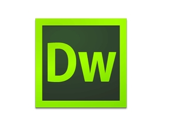

Dreamweaver介绍 |
|||
| 首页 | 工作界面 | 软件优点 | |
关于DreamweaverAdobe Dreamweaver，简称“DW”，中文名称 "梦想编织者"，最初为美国Macromedia公司开发，2005年被Adobe公司收购。 DW是集网页制作和管理网站于一身的所见即所得网页代码编辑器。利用对 HTML、CSS、JavaScript等内容的支持，设计师和程序员可以在几乎任何地方快速制作和进行网站建设。 Adobe Dreamweaver使用所见即所得的接口，亦有HTML（标准通用标记语言下的一个应用）编辑的功能，借助经过简化的智能编码引擎，轻松地创建、编码和管理动态网站。 访问代码提示，即可快速了解 HTML、CSS 和其他Web标准。 使用视觉辅助功能减少错误并提高网站开发速度。 |
|||